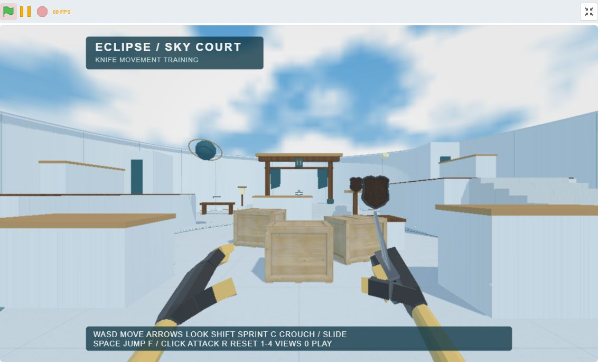

In development
Eclipse 3D
A 3D scene engine for TurboWarp.
Scenes, cameras, models, materials, animation, physics and audio,
managed through Scratch blocks.
About
Eclipse 3D manages a retained 3D scene: create objects once, then update them with blocks. Shared models and materials, skeletal animation, lighting, shadows, particles, picking, gameplay physics and spatial audio work together in the same scene.
The aim is something closer to a small game engine. It is a separate project from Simple 3D and Extra 3D, with its own scene system, model import pipeline and tools for more involved projects.
A place to start Open Hello 3D, change a few blocks, then work through the larger examples.
First-person knife
editable .sb3{kind=link}

A small arena project with connected scripts you can inspect and change.
- Demonstrates
- Movement, GLB loading, skeletal animation, timed ray hits, physics targets, particles and audio.
- Optional rig
- Play without arms, or press I to load your own
KnifeFPS.glbfrom RGS_Dev’s separately purchased pack. The model is not included. Asset details & credits.
Controls WASD move ↑ ↓ ← → look Space jump F / click attack All controls
Docs & links
Loading the extension
- Download
eclipse3d.jsfrom the GitHub Release assets.eclipse3d.min.jsis a smaller alternative with the same blocks. - In the TurboWarp web editor or TurboWarp Desktop, choose Add Extension → Custom Extension → File.
- Select the downloaded JS file.
- Enable Run extension without sandbox.
Or open an example project, approve its embedded extension, and click the green flag.
If the release only lists dist.zip, extract it first and select the JS file inside.
FAQ
Does this run on the Scratch website?
No. Eclipse 3D needs TurboWarp, WebGL 2 and permission to run as an unsandboxed extension. See the compatibility guide for supported workflows.
Is it compatible with Simple 3D or Extra 3D projects?
They are separate extensions with different blocks and scene systems. Eclipse 3D is not a drop-in replacement. Its own older Turbo3D projects retain the turbo3d extension ID and existing block opcodes.
Why do projects still use “turbo3d”?
Eclipse 3D was formerly called Turbo3D. The internal extension ID and serialized block names remain unchanged so existing projects keep working. The public bundles are named eclipse3d.js and eclipse3d.min.js.
Do I need the paid knife model to try Eclipse 3D?
No. All examples, including the first-person knife demo, are playable with their included assets. In the knife demo, owners can press I to load their separately purchased KnifeFPS.glb as an optional viewmodel. The model is not included or saved into the project.
What should I know about the limits?
WebGL 2 is required. Physics uses translation-only boxes and spheres, and model importing supports a defined subset of glTF. Read the limitations guide before planning a larger project.
Source & license
Engine code, editable SB3 examples and docs live together. Eclipse 3D is MIT licensed; third-party assets have their own credits.
Development & releases
Download extension files from the GitHub Release assets. The changelog records project changes.